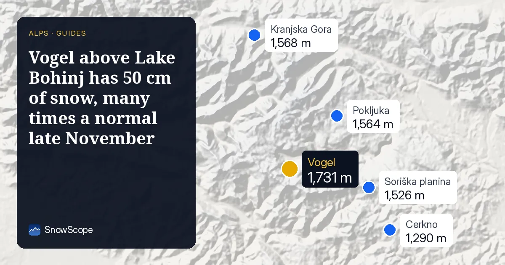
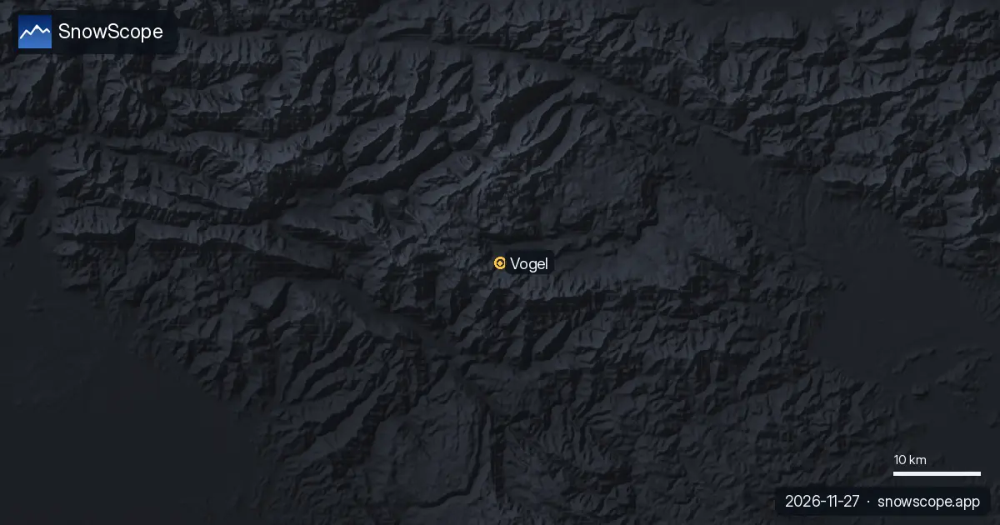
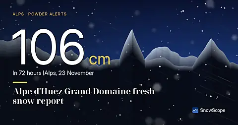

Vogel above Lake Bohinj has 50 cm of snow, many times a normal late November
Vogel, the ski area above Lake Bohinj in Slovenia's Julian Alps, has 50 cm of snow on its upper slopes after 55 cm fell in three days. At 1,152 m, the snowpack is 24 cm, where a normal 27 November has only 2 cm: one of the biggest early starts in the Alps this year, relative to normal.
See the live snow forecast for Vogel in the SnowScope appSnow depth, powder alerts and the 3D map, free.

What fell, and when
The storm came from the south-west on Wednesday and Thursday: 20 cm on the first day, 34 cm on the second. It is the kind of Mediterranean storm that hits the Julian Alps first and hardest, and it also loaded nearby Kranjska Gora, which has 44 cm on top after 42 cm.
The coming days are dry, with almost no new snow until December. Cold weather will keep the snow in place.
Why the comparison with normal is so striking
Vogel's lower and middle slopes usually have little natural snow at the end of November: the normal depth at 1,152 m is 4 cm on 8 December and 5 cm on 15 December. Snow covered the ground there on 27 November in only 57% of past winters.
So the current 24 cm is not just above normal, it is several times the usual mid-December value. Even a usual Christmas Day has only about 8 cm at that height.
What usually happens next
Early snow at this height and this close to the Adriatic is often followed by a mild spell that takes some of it away, especially on the lower slopes and in the valley. The upper slopes, which climb to 1,731 m, keep it much better.
The numbers are modest in a normal winter: a usual New Year's Day has 9 cm at 1,152 m. This year's start therefore gives Vogel a rare cushion for the holidays.
Skiing Vogel
Vogel is reached by cable car from the shore of Lake Bohinj, and the ski area spreads over a high plateau from 572 m at the valley station to 1,731 m at the top. The view over the lake to Triglav, Slovenia's highest peak, is the main reason people come back.
It is a small area with mostly red and blue runs, popular with families from Ljubljana and with visitors who want a quiet ski day in a national park setting.
Quick answers
Is Vogel open now? The resort sets its own opening date; the natural snow on the upper slopes is already enough for a normal start.
Is the snow likely to last? On the upper slopes, yes, if cold weather holds into December. Lower down, a mild spell could take some of it away, as it often does after early snow in the Julian Alps.
How does Kranjska Gora compare? It is lower, with runs from 807 m to 1,568 m, and depends more on snowmaking; this week it got an unusually big share of the storm too.
Is it good for beginners? Mostly, yes: wide blue and red runs, and a ski school at the top station.
Plan a visit
The best days to come this year are the first weekends of December, when the early snow and the quiet season meet. Check the Vogel snow page and the Kranjska Gora snow page before setting off.
The road to Bohinj can be icy in the mornings after a cold night; leave early and allow time at the cable car on weekends.
Tips for skiers
- Go in the first half of December to ski Vogel's rare early snow before the holiday crowds.
- Take the first cable car up: the light on the lake and the snow are best early.
- Pair the trip with Kranjska Gora, an hour away, which also had a big storm.
- See the Slovenian and Alpine numbers on the Slovenia snow hub and the Alps snow hub.
About these numbers
Snow numbers: SnowScope's snow map and forecast for today, and our record of 46 past winters at each resort (an estimate for the area, not the resort's own report).
Official avalanche bulletins: ARSO – Slovenian Environment Agency
Cite this report
For research, teaching or the press: the numbers and charts are free to reuse under CC BY 4.0 with this citation.
SnowScope (2026), Vogel above Lake Bohinj has 50 cm of snow, many times a normal late November, https://snowscope.app/blog/en/2026/11/vogel-slovenia-snow-late-november-2026-lake-bohinj-ski-area-far-above-normal.html, accessed 2026-11-27
SnowScope (Atlas Labs). (2026, November 27). Vogel above Lake Bohinj has 50 cm of snow, many times a normal late November. SnowScope snow reports. https://snowscope.app/blog/en/2026/11/vogel-slovenia-snow-late-november-2026-lake-bohinj-ski-area-far-above-normal.html
BibTeX
@misc{snowscope2026vogelsloveniasnowlatenov,
author = {{SnowScope (Atlas Labs)}},
title = {Vogel above Lake Bohinj has 50 cm of snow, many times a normal late November},
year = {2026},
month = nov,
howpublished = {\url{https://snowscope.app/blog/en/2026/11/vogel-slovenia-snow-late-november-2026-lake-bohinj-ski-area-far-above-normal.html}},
note = {Published 2026-11-27 22:59 UTC; accessed 2026-11-27}
}· CC BY 4.0 · Methods, data and tools →
Vogel: snow and temperature by height, this winter vs last (tools) →
Follow Vogel
Free: a message when fresh snow is coming, and the forecast every morning.
More snow reports

Alps snow forecast for the next 3 weeks from the 50-member ECMWF ensemble, NOAA GEFS and NASA MODIS: 19.1 cm of fresh snow on average this week (normal 17.8), then only 9 cm from 1 to 8 December (normal 21.9). Isola 2000 74 % above normal, Chamonix 6 %.

Alpe d'Huez got 106 cm of fresh snow in 72 hours by 23 November. More powder coming, but watch for rain mid-week.

14 Swiss resorts tracked on 23 November; Zermatt leads with 63 cm depth, 29 cm more forecast by 26 November.